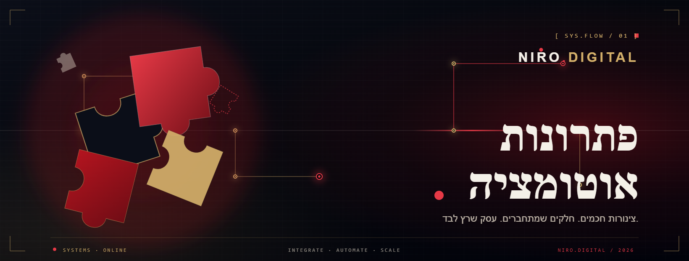

הדרך להפוך את העסק למערכת שעובדת בשבילך
גם כשאתה לא ליד הטלפון.

ליד שמחכה שעה כבר מתקרר. רוב הסיכוי לסגור נמצא ב-5 הדקות הראשונות, ובדיוק אז אתה עסוק.
ברגע שמגיעה פנייה (טופס, וואטסאפ או מודעה) נשלחת תגובה אישית אוטומטית תוך פחות מדקה, מסביב לשעון.
טריגר: Webhook מהטופס או Facebook Lead Ads ← פעולה: שליחת הודעה (Email / WhatsApp / SMS) עם תבנית אישית שכוללת את שם הליד.
לידים שנרשמים ביד או נשארים תקועים במייל נופלים בין הכיסאות. אין תמונה אחת מסודרת.
כל פנייה נכנסת אוטומטית לטבלה אחת מסודרת, עם כל הפרטים, הסטטוס והתאריך. כלום לא הולך לאיבוד.
טריגר: Webhook / Lead Ads ← פעולה: Airtable "Create a Record" עם מיפוי השדות (שם, טלפון, מקור, סטטוס).
לקוח חדש שלא שומע ממך אחרי הפנייה מאבד עניין, ועובר למי שכן הזכיר לעצמו להיות שם.
סדרת מיילים מתוזמנת שמחממת, נותנת ערך ובונה אמון אוטומטית מהרגע הראשון ועד הסגירה.
טריגר: ליד חדש נכנס ← Email 1 מיידי ← Delay ← Email 2 (ערך) ← Delay ← Email 3 (הצעה).
אותן שאלות חוזרות גוזלות שעות, ופניות מגיעות גם בלילה כשאין מי שיענה.
סוכן AI שעונה לשאלות, מסנן פניות ומעביר אליך רק לידים חמים, מסביב לשעון.
ManyChat / Make: בוט עם תרחיש שאלות נפוצות ← חיבור ל-AI (GPT) לתשובות חכמות ← העברת ליד חם ל-CRM ולהתראה אליך.
סוף החודש, ואתה שוב יושב לבנות טבלאות וסיכומים ביד במקום לקבל החלטות.
דוח שמתעדכן אוטומטית מהנתונים שלך, מסודר, ומוכן להחלטות בכל רגע.
תזמון יומי/שבועי ← איסוף נתונים (Airtable / Google Sheets) ← יצירת או עדכון טבלה ← שליחה אוטומטית במייל.
זה בדיוק מה שאנחנו עושים ב-NIRO Digital. בונים לעסק שלך מערכת אוטומטית שמייצרת לידים, עונה, ומסדרת את כל התפעול, כדי שתחזור לעשות את מה שאתה הכי טוב בו.